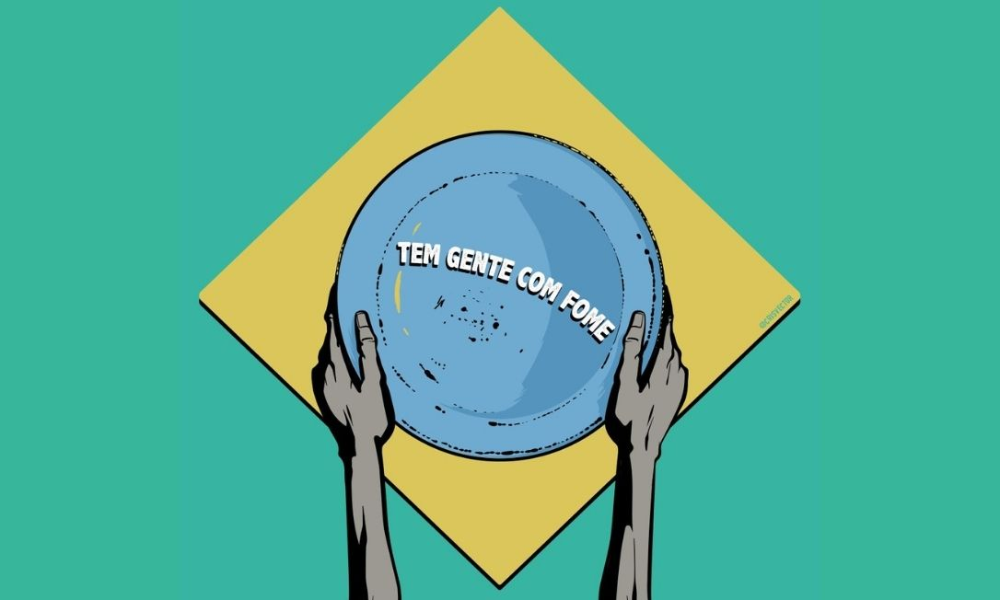

Aproximadamente 828 milhões de indivíduos experimentaram a privação de alimentos no ano de 2021. Segundo a ONU (Organização das Nações Unidas) houve um aumento de aproximadamente 150 milhões de pessoas em situação de fome, um acréscimo de 103 milhões entre 2019 e 2020 e mais 46 milhões em 2021.
Após permanecer relativamente estável desde 2015, a prevalência da desnutrição saltou de 8,0% para 9,3% entre 2019 e 2020, e teve um aumento mais lento em 2021, chegando a 9,8%. As projeções indicam que cerca de 670 milhões de pessoas ainda enfrentarão fome em 2030, o que representa 8% da população global.
De acordo com a ONU, esse cenário reflete desigualdades acentuadas tanto entre os países quanto dentro deles, devido a uma recuperação econômica desigual e perdas de renda não recuperadas.
O relatório indica que, após um aumento significativo em 2020, a prevalência global de insegurança alimentar moderada ou grave permaneceu praticamente inalterada em 2021, mas a insegurança alimentar grave aumentou, refletindo uma deterioração da situação para pessoas que já enfrentavam sérias dificuldades.
Em 2021, aproximadamente 2,3 bilhões de pessoas no mundo viviam com insegurança alimentar moderada ou grave, o que representava 11,7% da população global em situação de insegurança alimentar em níveis graves.
A fome no Brasil é um grave problema que afeta uma parte da população, resultando na falta de acesso adequado a alimentos. Esse fenômeno tem suas raízes nas estruturas sociais e econômicas que moldaram o país ao longo do tempo. Entre as principais causas da fome no Brasil estão a desigualdade socioeconômica e a má distribuição de renda, que afetam tanto a população brasileira como também são fatores importantes no contexto global da fome.
Essa situação é resultado de um sistema que concentra a riqueza em um pequeno grupo ou camada social, enquanto muitas pessoas enfrentam escassez de recursos. Essa realidade também está ligada a outros problemas, como a pobreza e a insegurança alimentar.
Em 2022, o Brasil enfrentou um triste retrocesso ao voltar a figurar no mapa da fome. Esse cenário alarmante representou um grande desafio para o país, que havia conquistado avanços significativos na luta contra a desnutrição e a insegurança alimentar ao longo dos anos. Vários fatores contribuíram para esse triste retorno. A combinação de crises econômicas, sociais e políticas impactou diretamente a capacidade do governo de implementar políticas efetivas de combate à fome e à pobreza.
No Brasil, a pandemia agravou a crise de fome, resultando em um total de 33,1 milhões de pessoas atualmente sem acesso adequado à alimentação. Isso representa um aumento de 14 milhões de brasileiros em situação de insegurança alimentar grave em 2022 em comparação com 2020.
A pesquisa revela que seis em cada dez domicílios enfrentam dificuldades para garantir o acesso pleno à alimentação e têm preocupações sobre a escassez de alimentos no futuro, com as regiões Norte e Nordeste sendo as mais afetadas.
Segundo o Instituto Brasileiro de Geografia e Estatística (IBGE), os indicadores de insegurança alimentar já vinham piorando no país ao longo de pelo menos nove anos, mas a pandemia agravou ainda mais essa situação dramática.
O estudo mostra que mais da metade (58,7%) da população brasileira convive com algum nível de insegurança alimentar, seja leve, moderada ou grave (incluindo a fome total). Em números absolutos, são 125,2 milhões de brasileiros nessas condições, o que representa um aumento de 7,2% em relação a 2020, quando a pandemia de Covid-19 teve início.
A quantidade de indivíduos impactados pela fome em escala global alcançou 828 milhões em 2021, registrando um acréscimo de aproximadamente 46 milhões desde 2020 e de 150 milhões desde o início da pandemia de COVID-19, conforme o mais recente relatório das Nações Unidas sobre o assunto. O documento apresenta novas evidências de que o mundo está se distanciando ainda mais de seu objetivo de eliminar a fome, a insegurança alimentar e a má nutrição em todas as suas manifestações até 2030.